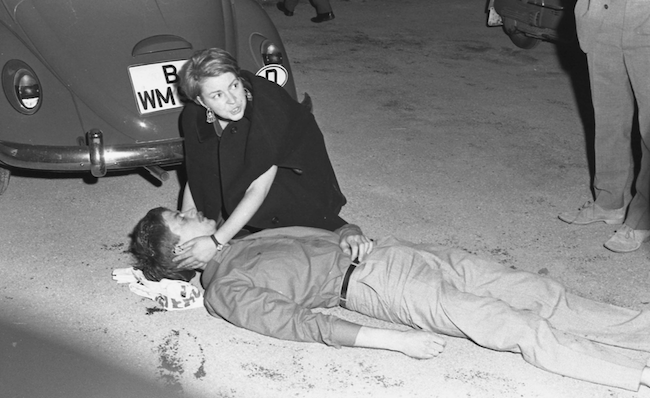

↑ Rudi Dutschke, Selections from On Anti-authoritarianism, 1968
Using all the means at its disposal, the existing System strives to prevent us from introducing those conditions in which men can live creative lives without war, hunger, and repressive work. Every radical opposition to this System must necessarily assume a global dimension today. In the current historical period, the globalization of the revolutionary forces is the most important task of those who are working for the emancipation of the human race. The underprivileged in the whole world constitute the historical mass base of liberation movements. In them alone lies the subversive-explosive character of the international revolution.
A new stage began in the 1960’s with the revolutionary upheavals in Algeria and Cuba and the unbroken struggle of the South Vietnamese Liberation Front against the Diem dictatorship. Only the latter achieved world-historical significance for the worldwide opposition movement. The American aggression in Vietnam, too blatant and brutal to be overlooked, took place at a time when imperialism's various mechanisms for influence and control could no longer prevent the victory of the revolutionary liberation forces in South Vietnam. [...] This apparent contradiction dissolves once we understand that imperialism had to recognize the ideology of coexistence, sponsored by the Soviet Union, in order to stabilize a calm zone of the System, at least in middle and Western Europe, and in order to “cover its rear” for the short-term and effective destruction of the revolutionary movements of the Third World. The historical guilt of the Soviet Union consists in its complete failure to grasp this strategy of imperialism in a deep and fundamental sense and to counter it in a subversive and revolutionary manner.
When, in the middle 1960’s, Vietnam became a living issue for us through lectures, discussions, films, and demonstrations, we revolutionary socialists were able historically to sublimate, so to speak, our guilt feelings over the existence of the Berlin Wall and of Stalinism in the German Democratic Republic by propagating the specific difference between seizing power through force, without, however, revolutionizing the masses and the collectivization of the idea of social liberation in the process of revolutions, as in Vietnam.
As students - although varying from faculty to faculty - we find ourselves in an intermediate position in the total social reproduction process. On the one hand, we are intellectually and educationally a privileged fraction of the people, but actually this privilege signifies nothing but frustration. Frustration because the student, especially the politically committed student, day after day experiences critically, and sometimes materially, the stupidity of the cliques of political hacks who do the bidding of the irrational authorities. Moreover, these anti-authoritarian students have not yet assumed any materially secure positions in society and are still relatively far from power interests and power positions. This temporary subversive position of the students by itself engenders a dialectical identity between the immediate and the historical interests of the producers. Hence, the vital needs and interests in regard to peace, justice, and emancipation can best materialize in these sociological positions. But students develop with real virulence only when they become politicized in the anti-authoritarian struggle against the bureaucracy within the milieu of their own university institution, when they more resolutely engage in the political struggle for their interests and needs. We must not forget the direct relationship of the student producer to his educational milieu. His learning situation in the university is determined by the dictatorship of examinations, rising in an inflationary way, and by the dictatorship of professordom. In turn, the professors are the servants of the State. The present day nationalization of the whole society creates the basis for an understanding of the anti-state and anti-institution struggle of the radical extraparliamentary opposition.
The ruling class has undergone a deep transformation. For a long time now it has no longer been identical with the nominal owners of the means of production. Marx had already seen the dawn of a new "class" of "industrial bureaucracy." This class cannot overcome the fundamental contradiction of bourgeois capitalist society. Rather, it brings it to a climax and ushers in its last phase, in which all capital functions have been socialized and delegated to certain groups and institutions. “The more a ruling class is able to absorb the most impotent men of the oppressed classes, the more solid and more dangerous is its rule" (Karl Marx, Capital, Vol. 3). The development has gone beyond this phase and has completed the repressive socialization of capital. Therein lies the strength and the weakness of the system of late capitalism. In fact, this development does not leave any groups outside the total context and tries to dominate all through "a system of concessions within the capitalistic framework" (Sering). This structural framework is guaranteed by the "dull compulsion of conditions," the internalized norms and ideas of bourgeois capitalistic society. But if a socially relevant fraction of the underprivileged outside the circle of vested interests, where the national product is distributed, bursts asunder this matter-of-course restriction of interests and needs to the ruling framework, the whole system is called in question. "Thus the breaching of false consciousness can provide the Archimedean point for a more comprehensive emancipation-on an infinitely small place to be sure but the chance for a change depends upon the widening of such small places." (Herbert Marcuse, Repressive Tolerance).
Our historically correct limitation of our action to the university should not be made into a fetish. A revolutionary dialectic of the correct transitions must regard the "long march through the institutions" as a practical and critical action in all social spheres. It must set as its goal the subversive-critical deepening of the contradictions, a process which has been made possible in all institutions that participate in the organization of day-to-day life. There no longer exists a sphere in our society which would be exclusively privileged to express the interests of the whole movement in its cultural revolutionary phase.
The old concepts of socialism must be critically suspended, not destroyed and not preserved artificially. A new concept cannot yet be realized. It can be worked out and brought into being only in the practical struggle, in the constant mediation between reflection and action, practice and theory. Today revolutionary science is possible only within the anti-authoritarian movement, as a productive force for the liberation of man from the uncomprehended and uncontrolled powers of society and nature. Today we are not bound together by an abstract theory of history but by an existential disgust in the presences of a society which chatters about liberty and yet brutally oppresses the immediate interest and needs of individuals and peoples fighting for their social-economic emancipation.
But let us not succumb to any illusions. The worldwide net of organized repression, the continuity of power, will not be easily broken. The “new man of the twenty-first century” (Guevara, Fanon) who represents the preconditions of the “new society,” will be the product of a long and painful struggle in which temporary upsurges will be followed by unavoidable “defeats.” viewed in terms of classical revolutionary theory, our cultural revolution is a transitional re-revolutionary phase in which persons and groups still yield to various illusions, abstract ideas, and utopian projects. It is a phase in which the abstract ideas, and utopian projects. it is a phase in which the radical contradiction between revolution and counterrevolution, between the ruling class in its new form and the camp of the anti-authoritarian and underprivileged, has not yet matured in a concrete and immediate sense. What in America is already a clearly defined reality has a great significance for use, with some modifications. “This is no time for sober reflection but a time for adjuration. The task of intellectuals is identical with that of the organizer of the street, the conscientious objector, of the Diggers: to talk with the people and not about the people. The literature that leaves a mark is now the underground literature, the speeches of Malcolm X, the writings of Fanon, the songs of the Rolling Stones and of Aretha Franklin.
All the rest sound like the Moynihan Report or a Time article which aims to explain everything, understand nothing, and change nobody." (A. Kopkind, From Nonviolence to Guerrilla Warfare, in Voltaire-Flugschriften, No. 14 ). We still do not have a broad, continuous underground literature, the dialogues of intellectuals with the people are still missing, that is to say, from the standpoint of the real, immediate, and historical interests of the people. There is the beginning of a desertion campaign in the American occupation army, but there is no organized desertion campaign in the Bundeswehr. We dare to attack American imperialism, but we do not yet have the will to smash our own power structure.
True revolutionary solidarity with the Vietnam revolutions consists in the actual weakening of the centers of imperialism and in their processual overthrow. The roots of our ineffectualness and resignation thus far lay in our theory. The decisive precondition for the revolutionizing of the masses is the revolutionizing of revolutionaries.
Benno Ohnesorg, German university student, Berlin, 1967